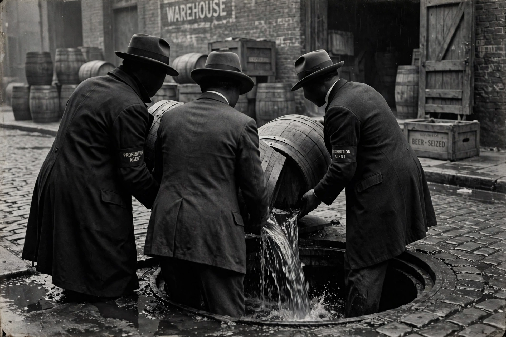

Prohibition in the United States
Prohibition in the United States was a nationwide constitutional ban on the production, importation, transportation and sale of alcoholic beverages, in force from 1920 to 1933.

Background
The temperance movement, driven by groups such as the Woman's Christian Temperance Union and the Anti-Saloon League, campaigned for decades against alcohol. The Eighteenth Amendment was ratified in 1919, and the Volstead Act set enforcement rules; the ban took effect in January 1920.
Effects
Rather than ending drinking, Prohibition encouraged illegal production and sale — bootlegging and speakeasies — and enriched organised crime figures such as Al Capone in Chicago. Enforcement was inconsistent and corruption widespread, and public support eroded, especially during the Great Depression.
Repeal
The Twenty-first Amendment, ratified in December 1933, repealed the Eighteenth Amendment — the only time a US constitutional amendment has been repealed by another.